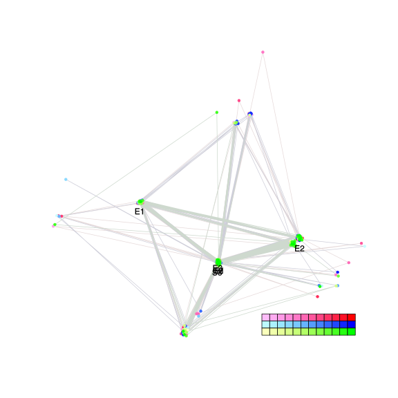
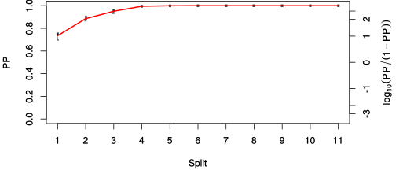
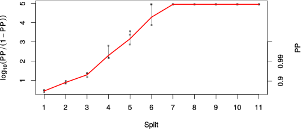

| chain # | burnin | subsample | Iterations (remaining) | command line | subdirectory | directory |
|---|---|---|---|---|---|---|
| 1 | 10000 | 1 | 90000 | bali-phy E1_AA_red3_Alpha_Manatees_BetaGamma.fas -s 65344 -n Alpha_Manatees_BetaGamma_c1 | Alpha_Manatees_BetaGamma_c1-1 | /DATA/work/ONCOGENEVOL/database/trees/Bali-Phy/red3/E1 |
| 2 | 10000 | 1 | 90000 | bali-phy E1_AA_red3_Alpha_Manatees_BetaGamma.fas -s 45263 -n Alpha_Manatees_BetaGamma_c2 | Alpha_Manatees_BetaGamma_c2-1 | /DATA/work/ONCOGENEVOL/database/trees/Bali-Phy/red3/E1 |
| 3 | 10000 | 1 | 90000 | bali-phy E1_AA_red3_Alpha_Manatees_BetaGamma.fas -s 89543 -n Alpha_Manatees_BetaGamma_c3 | Alpha_Manatees_BetaGamma_c3-1 | /DATA/work/ONCOGENEVOL/database/trees/Bali-Phy/red3/E1 |
| P(data|M) = -15978.073 +- 1.012 | Complete sample: 61 topologies | 95% Bayesian credible interval: 7 topologies |

Phylogeny Distribution

| Partition support: Summary |
| Partition support graph: SVG |
| 50% consensus | Newick (+PP) | SVG | |||||
| 66% consensus | Newick (+PP) | SVG | |||||
| 80% consensus | Newick (+PP) | SVG | |||||
| 90% consensus | Newick (+PP) | SVG | |||||
| 95% consensus | Newick (+PP) | SVG | |||||
| 99% consensus | Newick (+PP) | SVG | |||||
| 100% consensus | Newick (+PP) | SVG | |||||
| MAP | Newick (+PP) | SVG | |||||
| greedy | Newick (+PP) | SVG |
{kind=link}
{kind=link}
{kind=link}
{kind=link}
{kind=link}
{kind=link}
{kind=link}
{kind=link}
Alignment Distribution
Partition 1
| Diff | Min. %identity | # Sites | Constant | Informative | ||||
|---|---|---|---|---|---|---|---|---|
| Initial | FASTA | HTML | Diff | 3.99% | 698 | 1 (0.143%) | 644 (92.3%) | |
| Best (WPD) | FASTA | HTML | AU | 30.7% | 1023 | 79 (7.72%) | 507 (49.6%) |


Mixing
| burnin (scalar) | ESS (scalar) | ESS (partition) | ASDSF | MSDSF | PSRF-CI80% | PSRF-RCF |
|---|---|---|---|---|---|---|
| 2088 | 118 | 1948.438 | 0.008 | 0.030 | 1.009 | 1.018 |
Projection of RF distances for the first 3 chains3D | Variation of split PPs across chains |
Scalar variables
| Statistic | Median | 95% BCI | ACT | ESS | burnin | PSRF-CI80% | PSRF-RCF |
|---|---|---|---|---|---|---|---|
| prior | -1211 | (-1302, -1124) | 839.2 | 321 | 1737 | 1.005 | 1.002 |
| prior_A1 | -1228 | (-1318, -1144) | 758.7 | 355 | 1093 | 1.004 | 1.002 |
| likelihood | -1.592e+04 | (-1.597e+04, -1.586e+04) | 572.3 | 471 | 544 | 1.002 | 0.9998 |
| logp | -1.713e+04 | (-1.719e+04, -1.707e+04) | 556.7 | 485 | 1448 | 1.005 | 1.001 |
| Heat.beta | 1 | ||||||
| Scale1 | 5.231 | (3.047, 8.097) | 1 | 270003 | 86 | 0.9997 | 0.9965 |
| S1.F.pi.A | 0.07535 | (0.06709, 0.08352) | 8.442 | 31984 | 368 | 1 | 0.9961 |
| S1.F.pi.R | 0.03901 | (0.03295, 0.04541) | 8.909 | 30306 | 584 | 0.9999 | 1.007 |
| S1.F.pi.N | 0.03706 | (0.03187, 0.04254) | 14.34 | 18825 | 173 | 1.002 | 1 |
| S1.F.pi.D | 0.06131 | (0.0536, 0.06939) | 9.38 | 28785 | 530 | 0.9997 | 0.9994 |
| S1.F.pi.C | 0.05255 | (0.04382, 0.06124) | 8.466 | 31894 | 245 | 1 | 0.9963 |
| S1.F.pi.Q | 0.04323 | (0.0376, 0.04925) | 10.69 | 25262 | 645 | 1 | 1.001 |
| S1.F.pi.E | 0.06387 | (0.05662, 0.07131) | 14.04 | 19227 | 591 | 1 | 0.9961 |
| S1.F.pi.G | 0.07899 | (0.06873, 0.08973) | 13.09 | 20633 | 283 | 1 | 1.008 |
| S1.F.pi.H | 0.02198 | (0.0178, 0.02656) | 8.624 | 31306 | 230 | 0.9999 | 1.005 |
| S1.F.pi.I | 0.047 | (0.04045, 0.05377) | 9.137 | 29550 | 482 | 0.9995 | 0.9975 |
| S1.F.pi.L | 0.09659 | (0.08617, 0.1071) | 9.457 | 28551 | 243 | 0.9997 | 1.003 |
| S1.F.pi.K | 0.04649 | (0.04029, 0.05314) | 8.474 | 31862 | 459 | 0.9999 | 0.9977 |
| S1.F.pi.M | 0.02031 | (0.01622, 0.02457) | 8.871 | 30436 | 212 | 1 | 0.9964 |
| S1.F.pi.F | 0.04229 | (0.03531, 0.04951) | 11.06 | 24412 | 193 | 1.002 | 1.005 |
| S1.F.pi.P | 0.0442 | (0.03674, 0.05185) | 27.88 | 9683 | 474 | 1 | 0.9975 |
| S1.F.pi.S | 0.06036 | (0.05327, 0.06769) | 10.83 | 24926 | 310 | 1 | 0.9994 |
| S1.F.pi.T | 0.06342 | (0.05618, 0.07097) | 10.47 | 25784 | 151 | 1 | 0.9966 |
| S1.F.pi.W | 0.00968 | (0.006163, 0.01355) | 8.249 | 32732 | 308 | 0.9998 | 0.9985 |
| S1.F.pi.Y | 0.02743 | (0.02192, 0.03307) | 8.123 | 33238 | 267 | 1 | 1.001 |
| S1.F.pi.V | 0.06728 | (0.05933, 0.07544) | 13.5 | 19998 | 307 | 1 | 1.007 |
| I1.RS07.meanIndelLengthMinus1 | 3.016 | (2.28, 3.877) | 760.2 | 355 | 1151 | 1.008 | 1.008 |
| I1.RS07.logLambda | -3.912 | (-4.102, -3.718) | 92.09 | 2931 | 186 | 1.001 | 1.002 |
| |A1| | 958 | (912, 1008) | 2289 | 117 | 2088 | 0.9839 | 0.987 |
| #indels1 | 146 | (133, 158) | 572.1 | 471 | 799 | 0.9 | 0.9981 |
| |indels1| | 589 | (508, 674) | 1597 | 169 | 1788 | 1.009 | 1.018 |
| #substs1 | 2905 | (2860, 2943) | 1524 | 177 | 1776 | 0.975 | 0.9926 |
| Scale1*|T| | 6.017 | (5.768, 6.275) | 52.65 | 5128 | 122 | 1 | 1.001 |
| |A| | 958 | (912, 1008) | 2289 | 117 | 2088 | 0.9839 | 0.987 |
| #indels | 146 | (133, 158) | 572.1 | 471 | 799 | 0.9 | 0.9981 |
| |indels| | 589 | (508, 674) | 1597 | 169 | 1788 | 1.009 | 1.018 |
| #substs | 2905 | (2860, 2943) | 1524 | 177 | 1776 | 0.975 | 0.9926 |
| |T| | 1.15 | (0.6659, 1.745) | 1 | 270003 | 86 | 1 | 0.9974 |